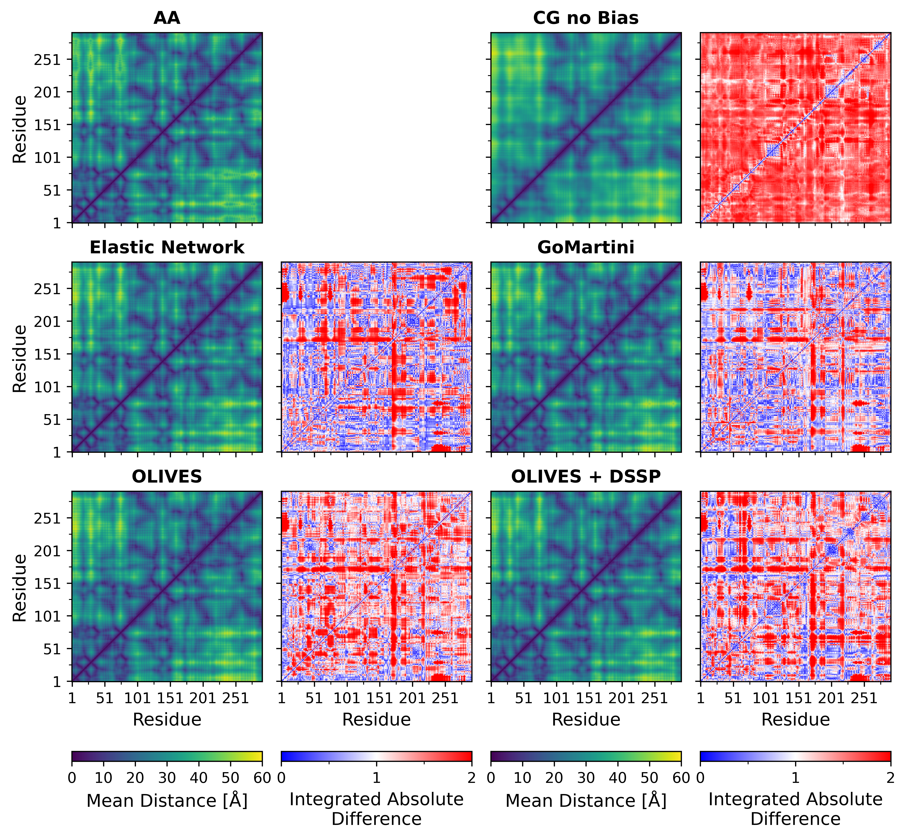

Tutorial I.III - Simulations of Intrinsically Disordered Regions in Martini 3
This tutorial is part of "Martini 3 protein models - a practical introduction to different structure bias models and their comparison".
In case of issues, please contact duve@fias.uni-frankfurt.de, luis.borges@ens-lyon.fr, or thallmair@fias.uni-frankfurt.de.
If you would like to refer to information of this tutorial, please cite T. Duve, L. Wang, L. Borges-Araújo, S. J. Marrink, P. C. T. Souza, S. Thallmair, Martini 3 Protein Models - A Practical Introduction to Different Structure Bias Models and their Comparison, bioRxiv (2025), doi: 10.1101/2025.03.17.643608.This section focuses on introducing the Intrinsically Disordered Region (IDR) of CK1δ to the system. Previous works have shown that simulations of IDRs using the default Martini 3.0.0 force field result in underestimations of radii of gyration [10, 13, 36, 37]. Therefore, the force field should be modified to account for the specific properties of IDRs. Here, we present two options: modifying the BB-water interaction strength and the dedicated force field Martini3-IDP.
I.III.1 Adding a Water Bias
One way to improve the performance of Martini 3 when simulating IDRs is to modify the strength of the protein-water interactions for the IDR only. This technique utilizes the BB virtual sites, which are also used in the GōMartini model to implement the structural bias, to modify the LJ potential depth between the BB and water beads. Since these virtual sites overlap with the BB bead, the non-bonded interactions between BB and water beads can be effectively adjusted by introducing an additional potential between the virtual site and water beads [13].
In this approach to set up the multi-domain protein model, we use the full length CK1δ atomistic structure as Martinize2 input. As the IDR structure is typically not present in experimental structures, AlphaFold or SWISS-MODEL can be used to generate the full length atomistic protein structure (CK1d_IDR.pdb)[23, 24]. The structure is available in AlphaFold as entry Q9DC28 In Martinize2, the water bias can be added via the -water-bias flag. The residues of the IDR are defined via -id-regions 293:415, and the strength of the water-bias is set to a value of 0.5 kJ/mol here by -water-bias-eps idr:0.5 [13]. The corrected bonded parameters for IDRs are applied with the -idr-tune flag. For the secondary structure, the regions indicated as disordered by the -id-regions flag are automatically assigned as coil from Martinize v0.14.0 onwards. The water bias can be combined with the GōMartini model for the structured region, although any of the protein structure models discussed previously are also compatible. Here we add a Gō-like network for the folded domain using -go. When disordered regions are additionally specified, Martinize2 ensures that Gō bonds initially found between folded and disordered domains are removed.
martinize2 -f CK1d_IDR.pdb -x CK1d_cg.pdb -o CK1d_only.top -ff martini3001 \
-p backbone -dssp -go -water-bias -water-bias-eps idr:0.5 -id-regions 293:415 -idr-tuneIn addition to the CG protein structure and topology, Martinize2 returns two files: go_atomtypes.itp, and go_nbparams.itp, which need to be added to the Martini 3 topology file, as described in Section I.I.3.3. Inspect the go_nbparams.itp file: you should note that it contains first a set of site-specific non-bonded potentials between backbone virtual sites in the folded domain of the protein, followed by a set of interactions between backbone virtual sites in the disordered domain and water, to effectively increase the strength of the interaction.
I.III.2 Martini3-IDP
Another way to improve the performance of IDRs in Martini 3 is offered by the recently developed Martini 3 disordered protein force field (Martini3-IDP)[38], which is well integrated into the current Martini 3 framework.
Proteins using the Martini3-IDP model can be generated in two ways. For pure IDPs, Polyply can be used to generated both parameters and coordinates. For proteins with both folded and disordered domains, Martinize2 can be used as described above.
The command used to martinize the protein is similar to Section 4.1, but the force field used is changed using the -ff flag. Additionally, an EN is applied to the folded region only instead of a Gō model, using the -eunit flag, demonstrating how different secondary structure biases can be combined with annotations for IDRs in a protein:
martinize2 -f CK1d_IDR.pdb -x CK1d_cg.pdb -o CK1d_only.top -ff martini3IDP \
-p backbone -dssp -elastic -el 0 -eu 0.85 -eunit 1:292 -id-regions 293:415 -idr-tuneI.III.3 Simulation of the Multi-Domain CK1δ Model

As described in Section I.I.4, the system can be solvated using insane with the following command.
insane -f CK1d_cg.pdb -o CG.gro -p system.top -pbc cubic -box 35,35,35 -salt 0.15 -sol W -d 0When simulating a protein with an IDR, it is especially important to use an appropriately sized box, to prevent the extended IDR from interacting with its mirror image. We therefore use an edge length of 35 nm here. The simulation of the system follows the protocol outlined in Section I.I.4.
An example of the conformational ensemble sampled during the simulations is shown in Figure 10.
The following and final section (I.IV) will provide some additional information and discuss some limitations of the Martini 3 protein model, as well as provide a quick summary and outlook of this tutorial.